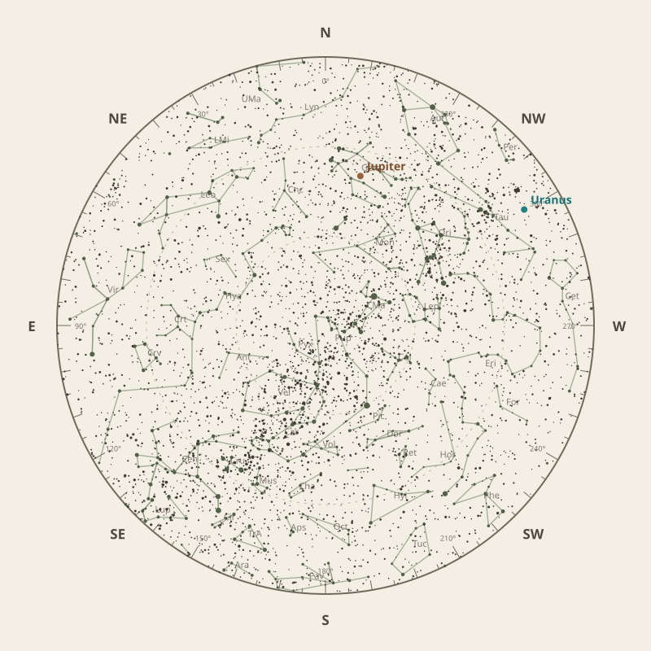

← Annual almanac


North is at the top; east is at the left. Solar System objects shown are above the horizon at 10 pm.
Monthly field almanac
February 2026
Galactic Centre viewing is best on 28 Feb 2026, from 2:57 am to 5:14 am, reaching 65°.
- New Moon
- 18 Feb Darkest skies
- Full Moon
- 2 Feb Brightest skies
- Best dark window
- 21 Feb 10h 17m
Current conditions
Checking the sky near South East Queensland, Australia…
Sky chart: 15 Feb 2026, 10 pm
South East Queensland, Australia local time.
Show static monthly chart

Night planner
Choose a date to see astronomical darkness, Moon interference, Galactic Centre visibility, and planet altitudes and times.
Best low-Moon dark periods this month
- 6:52 pm–5:09 am10h 17m · 16% Moon
- 6:53 pm–5:09 am10h 15m · 9% Moon
- 6:54 pm–5:08 am10h 14m · 4% Moon


Galactic Centre sessions
- 1:50 am–5:14 am3h 24m · core to 65°
- 1:49 am–5:12 am3h 24m · core to 63°
- 1:52 am–5:13 am3h 21m · core to 64°
Events
- HIP 37704 lunar occultation1:05 am; Moon at 28° altitude for the first listed contact.
- HIP 42806 lunar occultation11:27 pm; Moon at 41° altitude for the first listed contact.
- Uranus stationary pointApparent motion changes direction.
February highlights
- Planets
Neptune
Best monthly date at 28° altitude.
- Occultations
Mercury lunar occultation
7:47 am; Moon at 10° altitude for the first listed contact.
- Planetary events
Mercury greatest eastern elongation
Evening sky; 18.1° from the Sun.
- Milky Way
Milky Way core window
3h 24m with 65° altitude.


Moon phases
98%
70%
12%
25%
For faint deep-sky objects, observe when the Moon is below the horizon or weakly illuminated. For lunar relief, observe near the terminator; full Moon is best suited to ray systems and albedo features.
Download Moon phase CSV →

Planet visibility
Evening
- Uranus1 Feb · 7:00 pm43° · Good
- Neptune1 Feb · 7:00 pm28° · Good
- Saturn1 Feb · 7:00 pm28° · Good
- Mercury13 Feb · 7:00 pm4° · Poor
- Venus7 Feb · 7:00 pm1° · Poor
 Uranus
Uranus Neptune
Neptune Saturn
Saturn Mercury
Mercury Venus
VenusOvernight
- Jupiter4 Feb · 10:00 pm40° · Good
 Jupiter
JupiterPredawn
- Mars28 Feb · 5:00 am2° · Poor
 Mars
Mars

Data and downloads
Positions are unavailable for 2 comet entries.
Occultation times use a smooth lunar limb; confirm grazing events with IOTA Occult 4.